Bloque 1: Introducción
Curso: Modelos Cross-Lagged de Interceptos Aleatorios (RI-CLPM)
Escuela de Invierno ELSOC-COES
Pía Carozzi Lobos - pjcarozzi@uc.cl
2024-08-02
Contenidos
Cross-Lagged Panel Models (CLPM)
- Componentes
- Estrategia analítica
Random Intercept Cross-Lagged Panel Models (RICLPM)
- Diferencias con CLPM
- Componentes
- Consideraciones importantes
- Extensiones
Referencias

Online/offline
Chayinska, Miranda & Gonzalez (2021). A longitudinal study of the bidirectional causal relationships between online political participation and offline collective action.
“Examinar las dinámicas causales longitudinales entre la participación política online y la acción colectiva offline.”
Hipótesis
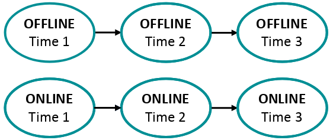
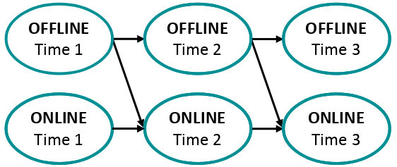
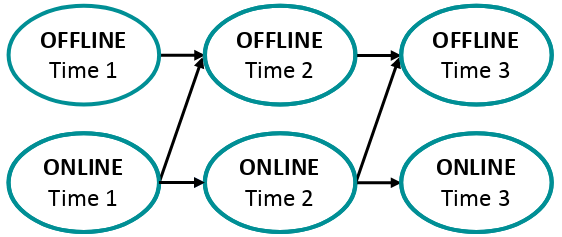
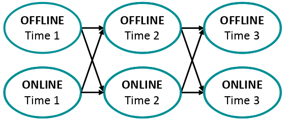
Dos estudios longitudinales
PARTICIPANTES:
Estudio 1: Estudiantes universitarios.
- Muestra de N=1227 estudiantes universitarios (370 hombres, 719 mujeres, 137 no reportan género), edades entre 24-40 años (Media = 18.89, SD = 1.63) en la primera ola.
- 5 olas a lo largo de 2 años.
Estudio 2: Muestra representativa a nivel nacional.
- Estudio Longitudinal Social de Chile (ELSOC).
- N=2924 adultos en la primera ola. 60.27% mujeres; media de edad 46.10 años (SD=15.28).
- 3 olas: 2016, 2017, 2018.
Dos estudios longitudinales
MEDICION:
Participación política online.
Con qué frecuencia usó RRSS para expresar su opinión sobre temas públicos en los últimos 12 meses? (1 = nunca; 5 = muy frecuentemente).
Participación en acción colectiva offline.
Con qué frecuencia participó en [firmar una carta o petición en apoyo a una causa, asistir a una marcha o manifestación política, una huelga] en los últimos 12 meses? (1 = nunca; 5 = muy frecuentemente).
ANÁLISIS:
Modelos Cross-Lagged longitudinales (CLPM).
Modelos Cross-Lagged Panel
Los modelos cross-lagged panel (Cross-Lagged Panel Models, CLPM) buscan identificar los mecanismos de retroalimentación entre dos o más variables a lo largo del tiempo.
Tres grandes objetivos:
- Conocer si existen relaciones causales entre las variables y si estos efectos son recíprocos.
- Establecer la dirección de dichas relaciones.
- Identificar cuál de las variables es causalmente dominante.
Modelos Cross-Lagged Panel
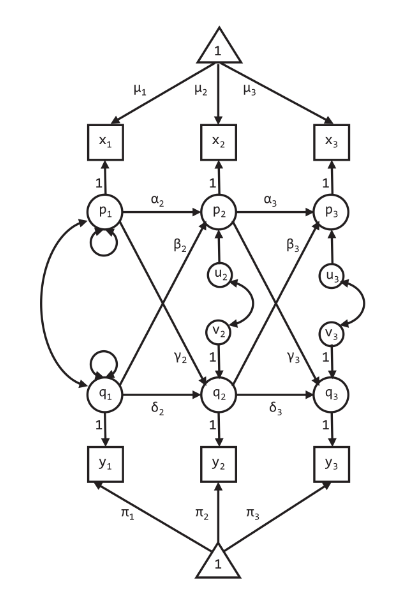
De Hamaker et al. (2015), p.103.
x e y son dos variables medidas en tres momentos de tiempo.
Símbolos:
Triángulos: constantes (estructura de medias)
Cuadrados: variables observadas
Círculos: variables latentes.
Aquí, las variables latentes p y q son simplemente las variables observadas centradas.
:::
Modelos Cross-Lagged Panel
De Hamaker et al. (2015), p.103.
x e y son dos variables medidas en tres momentos de tiempo.
\[x_{it} = \mu_{t} + p_{it} \\ y_{it} = \pi_{t} + q_{it}\]
Siendo \(\mu_{t}\) y \(\pi_{t}\) las grandes medias en el tiempo t para cada variable.
\(p_{it}\) y \(q_{it}\) representan las desviaciones temporales de cada individuo respecto a la gran media en el tiempo t.
:::
Modelos Cross-Lagged Panel
De Hamaker et al. (2015), p.103.
\(p_{it}\) y \(q_{it}\) representan las desviaciones temporales de cada individuo respecto a la gran media en el tiempo t. Son modeladas como:
\[p_{it}=\alpha_{t}p_{it-1}+\beta_{t}q_{it-1}+u_{it}\\ q_{it}=\delta_{t}q_{it-1}+\gamma_{t}p_{it-1}+v{it}\]
\(\alpha_{t}\), \(\delta_{t}\): Parámetros autorregresivos.
Dan cuenta de la estabilidad temporal de los constructos.
:::
Modelos Cross-Lagged Panel
De Hamaker et al. (2015), p.103.
\(p_{it}\) y \(q_{it}\) representan las desviaciones temporales de cada individuo respecto a la gran media en el tiempo t. Son modeladas como:
\[p_{it}=\alpha_{t}p_{it-1}+\beta_{t}q_{it-1}+u_{it}\\ q_{it}=\delta_{t}q_{it-1}+\gamma_{t}p_{it-1}+v{it}\]
\(\beta_{t}\), \(\gamma_{t}\): Parámetros cross-lagged.
Reflejan los efectos entre las variables, interpretados como cambio predictivo (Hamaker et al., 2015).
Estrategia analítica
A. Independence
B. Spillover
C. Facilitation
D. Reciprocity
CLPM bivariado
Chayinska et al. (2021) estiman cuatro CLPM para examinar las relaciones causales entre la participación política online y la acción colectiva offline.
Cuatro modelos a estimar:
A: Modelo autorregresivo.
Paths autorregresivos:
- \(\alpha_2 : OFF_{T1} \rightarrow OFF_{T2}\)
- \(\alpha_3 : OFF_{T2} \rightarrow OFF_{T3}\)
- \(\delta_2 : ON_{T1} \rightarrow ON_{T2}\)
- \(\delta_3 : ON_{T2} \rightarrow ON_{T3}\)
Estrategia analítica
A. Independence
B. Spillover
C. Facilitation
D. Reciprocity
CLPM bivariado
Chayinska et al. (2021) estiman cuatro CLPM para examinar las relaciones causales entre la participación política online y la acción colectiva offline.
Cuatro modelos a estimar:
B: Modelo unidireccional forward.
Paths autorregresivos:
- \(\alpha_2 : OFF_{T1} \rightarrow OFF_{T2}\)
- \(\alpha_3 : OFF_{T2} \rightarrow OFF_{T3}\)
- \(\delta_2 : ON_{T1} \rightarrow ON_{T2}\)
- \(\delta_3 : ON_{T2} \rightarrow ON_{T3}\)
Paths cross-lagged:
- \(\gamma_2 : OFF_{T1} \rightarrow ON_{T2}\)
- \(\gamma_3 : OFF_{T2} \rightarrow ON_{T3}\)
Estrategia analítica
A. Independence
B. Spillover
C. Facilitation
D. Reciprocity
CLPM bivariado
Chayinska et al. (2021) estiman cuatro CLPM para examinar las relaciones causales entre la participación política online y la acción colectiva offline.
Cuatro modelos a estimar:
C: Modelo unidireccional backward.
Paths autorregresivos:
- \(\alpha_2 : OFF_{T1} \rightarrow OFF_{T2}\)
- \(\alpha_3 : OFF_{T2} \rightarrow OFF_{T3}\)
- \(\delta_2 : ON_{T1} \rightarrow ON_{T2}\)
- \(\delta_3 : ON_{T2} \rightarrow ON_{T3}\)
Paths cross-lagged:
- \(\beta_2 : ON_{T1} \rightarrow OFF_{T2}\)
- \(\beta_3 : ON_{T2} \rightarrow OFF_{T3}\)
Estrategia analítica
A. Independence
B. Spillover
C. Facilitation
D. Reciprocity
CLPM bivariado
Chayinska et al. (2021) estiman cuatro CLPM para examinar las relaciones causales entre la participación política online y la acción colectiva offline.
Cuatro modelos a estimar:
D: Modelo bidireccional.
Paths autorregresivos:
- \(\alpha_2 : OFF_{T1} \rightarrow OFF_{T2}\)
- \(\alpha_3 : OFF_{T2} \rightarrow OFF_{T3}\)
- \(\delta_2 : ON_{T1} \rightarrow ON_{T2}\)
- \(\delta_3 : ON_{T2} \rightarrow ON_{T3}\)
Paths cross-lagged:
- \(\gamma_2 : OFF_{T1} \rightarrow ON_{T2}\)
- \(\gamma_3 : OFF_{T2} \rightarrow ON_{T3}\)
- \(\beta_2 : ON_{T1} \rightarrow OFF_{T2}\)
- \(\beta_3 : ON_{T2} \rightarrow OFF_{T3}\)
Estrategia analítica
Para cada uno de estos 4 modelos, se estima una versión libre y una versión constreñida, que restringe que los parámetros autorregresivos y cross-lagged sean iguales en el tiempo. Ej:
- Estimación libre: \(\gamma_2,\gamma_3,\beta_2,\beta_3\)
- Estimación constreñida: \(\gamma,\beta\;(con\;\beta_2=\beta_3,\gamma_2=\gamma_3)\)
En total se estiman 8 modelos:
| Libre | Restringido | |
|---|---|---|
| Autorregresivo | A1 | A2 |
| Unidireccional forward | B1 | B2 |
| Unidireccional backward | C1 | C2 |
| Bidireccional | D1 | D2 |
Estrategia analítica
Los modelos estimados son comparados sistemáticamente usando sus índices de ajuste (CFI, Comparative Fit Index; RMSEA, Root Mean Square Error).
Modelos libres vs. restringidos (Cole & Maxwell, 2003).
Testear si los efectos de las variables permanecen estables a lo largo del tiempo.
Si los modelos restringidos no cambian sustancialmente el ajuste, se elige la versión consetreñida, más parsimoniosa.
Modelos anidados (A,B,C,D).
Contrastar secuencialmente las hipótesis de independencia, spillover, facilitación y reciprocidad.
Estrategia analítica
Criterio de selección de modelos: Se compara el ajuste de los modelos, específicamente la diferencia entre sus CFI y RMSEA (Chen, 2007; Rutkowski & Svetina, 2014).
Puntos de corte:
- \(\Delta CFI < 0.02\)
- \(\Delta RMSEA < 0.03\)
Rutkowski & Svetina (2014) y Chen (2007) recomiendan este método cuando se tiene una muestra N > 300.
El test tradicional de diferencias de \(\chi^2\) (Satorra & Bentler, 2001) es sensible al tamaño de la muestra.
Tabla 1: Índices de ajuste de los modelos cross-lagged para participación online-offline (Estudio 2).
| Modelo | Indicadores de Bondad de Ajuste | Modelos | Comparación de ajuste |
|---|---|---|---|
| a1 | χ2 (57) = 255.307, p <.001; CFI = .963; TLI = .934; RMSEA = .034; SRMR = .034 |
a2 vs. a1 | ΔCFI= .001; ΔRMSEA= .000 |
| a2 | χ2 (59) = 252.945, p <.001; CFI = .964; TLI = .938; RMSEA = .034; SRMR = .034 |
||
| b1 | χ2 (57) = 236.596, p <.001; CFI = .967; TLI = .940; RMSEA = .033; SRMR = .032 |
b2 vs. b1 | ΔCFI= -.001; ΔRMSEA= .000 |
| b2 | χ2 (58) = 241.300, p <.001; CFI = .966; TLI = .940; RMSEA = .033; SRMR = .032 |
b2 vs. a2 | ΔCFI= .002; ΔRMSEA= -.001 |
| c1 | χ2 (57) = 249.152, p <.001; CFI = .964; TLI = .936; RMSEA = .034; SRMR = .033 |
c2 vs. c1 | ΔCFI= .000; ΔRMSEA= .000 |
| c2 | χ2 (58) = 248.981, p <.001; CFI = .964; TLI = .938; RMSEA = .034; SRMR = .033 |
c2 vs. a2 | ΔCFI= .000; ΔRMSEA= .000 |
| c2 vs. b2 | ΔCFI= -.002; ΔRMSEA= .001 | ||
| d1 | χ2 (55) = 235.085, p <.001; CFI = .967; TLI = .938; RMSEA = .033; SRMR = .031 |
d2 vs. d1 | ΔCFI= -.001; ΔRMSEA= .000 |
| d2 | χ2 (57) = 239.702, p <.001; CFI = .966; TLI = .939; RMSEA = .033; SRMR = .032 |
d2 vs. a2 | ΔCFI= .002; ΔRMSEA= -.001 |
| d2 vs. b2 | ΔCFI= .000; ΔRMSEA= .000 | ||
| d2 vs. c2 | ΔCFI= .003; ΔRMSEA= -.001 |
Adaptado de Chayinska et al. (2021), p.8. Nota. Modelos: a1 = autorregresivo (estimado libremente); a2 = autorregresivo (con constricciones de igualdad); b1 = unidireccional forward (estimado libremente); b2 = unidireccional forward (con constricciones de igualdad); c1 = unidireccional backward (estimado libremente); c2 = unidireccional backward (con constricciones de igualdad); d1 = bidireccional (estimado libremente); d2 = bidireccional (con constricciones de igualdad).
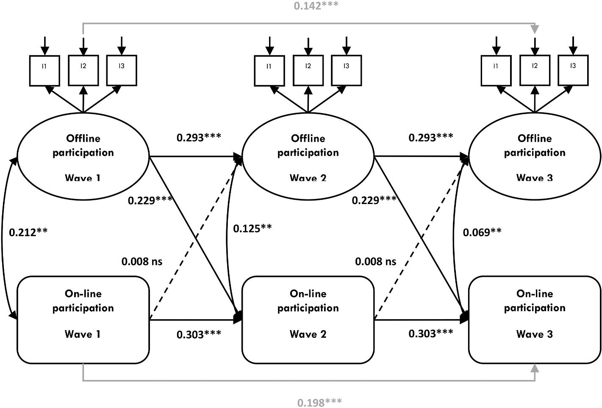
De Chayinska et al. (2021), p.9. Nota: *p <.05; ***p < .001. Modelo d2 en Tabla 1. \(\chi^2\) (57) = 239.702, p < .001; CFI = 0.966; TLI = 0.939; RMSEA = 0.033; SRMR = 0.032. Se reportan los coeficientes no estandarizados; las líneas punteadas indican los paths no significativos. Por claridad, no se representaron las covariables dentro de los puntos de tiempo ni los valores no significativos.
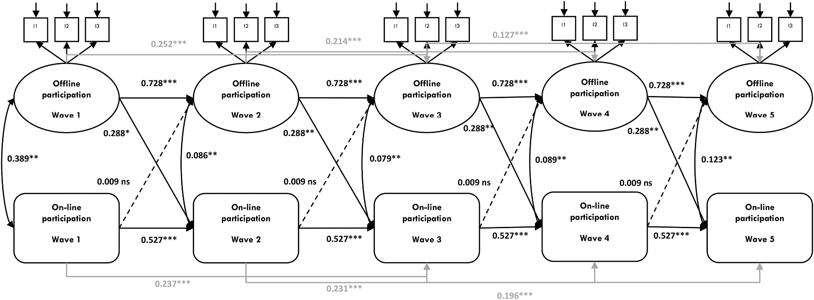
De Chayinska et al. (2021), p.7. Nota: *p <.05; ***p < .001. \(\chi^2\) (140) = 359.037. p < .001; CFI = 0.980; TLI = 0.970; RMSEA = 0.036; SRMR = 0.043. Se reportan los coeficientes no estandarizados; las líneas punteadas indican los paths no significativos. Por claridad, no se representaron las covariables dentro de los puntos de tiempo ni los valores no significativos.
Random Intercept Cross-Lagged Panel Models (RICLPM)
CLPM vs. RI-CLPM
Los CLPM incluyen parámetros autorregresivos para controlar la estabilidad temporal de los constructos.
- Los CLPM asumen que cada persona varía a lo largo del tiempo en torno a una gran media.
- Si la estabilidad de los constructos tiene una naturaleza invariante en el tiempo (ej. rasgos individuales), esta no puede ser controlada adecuadamente a través de la inclusión de parámetros autorregresivos.
- Problema de variable omitida: la estimación de los coeficientes de regresión cross-lagged en CLPM puede estar sesgada.
CLPM vs. RI-CLPM
RI-CLPM es propuesto como una aproximación SEM alternativa (Hamaker, Kuiper & Grasman, 2015).
- Perspectiva multinivel.
Descompone la varianza de las variables observadas en:
- Componente inter-individuo (between): Varianza atribuible a diferencias entre rasgos individuales, entre individuos.
- Componente intra-individuo (within): Varianza atribuible al cambio de los individuos en el tiempo.
- Permiten controlar la estabilidad/cambio entre individuos de manera de que las relaciones cross-lagged reflejen únicamente la estabilidad/cambio intra-individuo.
Componentes de los RICLPM
Componentes
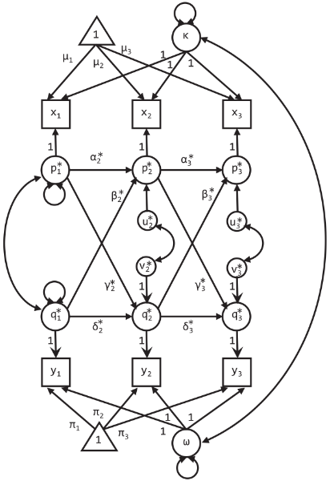
De Hamaker et al. (2015), p.103.
x e y son dos variables medidas en tres momentos de tiempo.
\[x_{it} = \mu_{t} + \kappa_{i} + p_{it}^{*} \\ y_{it} = \pi_{t} + \omega_{i} + q_{it}^{*}\]
Grandes medias: \(\mu_{t}\) y \(\pi_{t}\).
Interceptos aleatorios: \(\kappa_{i}\) y \(\omega_{i}\) representan las desviaciones individuales (rasgos) respecto a las grandes medias. Variables latentes.
\(p_{it}^{*}\) y \(q_{it}^{*}\): representan las desviaciones temporales de los individuos respecto a sus puntajes esperados (ej. \(\mu_{t} + \kappa_{i}\)).
Componentes
De Hamaker et al. (2015), p.103.
\(p_{it}^{*}\) y \(q_{it}^{*}\) son modeladas como:
\[p_{it}^{*}=\alpha_{t}^{*}p_{it-1}^{*}+\beta_{t}^{*}q_{it-1}^{*}+u_{it}^{*}\\ q_{it}^{*}=\delta_{t}^{*}q_{it-1}^{*}+\gamma_{t}^{*}p_{it-1}^{*}+v{it}^{*}\]
\(\alpha_{t}^{*}\), \(\delta_{t}^{*}\): Parámetros autorregresivos.
Representan el efecto carry-over dentro de las personas. El impacto de la desviación respecto a su puntaje esperado en una variable en t sobre la desviación temporal en la misma variable en t+1.
Componentes
De Hamaker et al. (2015), p.103.
\(p_{it}^{*}\) y \(q_{it}^{*}\) son modeladas como:
\[p_{it}^{*}=\alpha_{t}^{*}p_{it-1}^{*}+\beta_{t}^{*}q_{it-1}^{*}+u_{it}^{*}\\ q_{it}^{*}=\delta_{t}^{*}q_{it-1}^{*}+\gamma_{t}^{*}p_{it-1}^{*}+v{it}^{*}\]
\(\beta_{t}^{*}\), \(\gamma_{t}^{*}\): Parámetros cross-lagged.
Representan el efecto spill-over dentro de las personas. El impacto de la desviación respecto a su puntaje esperado en una variable en t sobre la desviación temporal en la otra variable en t+1.
Consideraciones
Olas y tiempo entre mediciones
- CLPM requiere de al menos 2 olas para ser identificado. RICLPM requiere de al menos 3 olas de datos, pero se recomiendan 4-5 olas.
- La convergencia del modelo mejora en la medida en que el número de olas se incrementa.
- Los lags entre mediciones deben estar igualmente espaciados en el tiempo.
- Si no lo fueran, los efectos autorregresivos y cross-lagged podrían ser distintos entre mediciones. Agrega complejidad a la interpretación de los resultados.
- Si los intervalos entre mediciones son muy largos, o muy cortos, la relación dinámica intra-individuos podría no ser capturada.
RI-CLPM o CLPM?
La decisión entre usar un CLPM o un RI-CLPM dependerá de la pregunta de investigación y debe ser informada por la teoría.
Cuál es la contribución esperada del componente inter-individuo y del componente intra-individuo a la varianza total? Es necesario descomponer la varianza?
- Si la varianza entre individuos es muy baja, CLPM y RI-CLPM son estadísticamente equivalentes.
- Si el foco está en el cambio en procesos intra-individuales, RI-CLPM es preferible al CLPM siempre que: 1) el diseño permita capturar el cambio y 2) el constructo sea susceptible de variar en el tiempo.
Extensiones
RI-CLPM básico
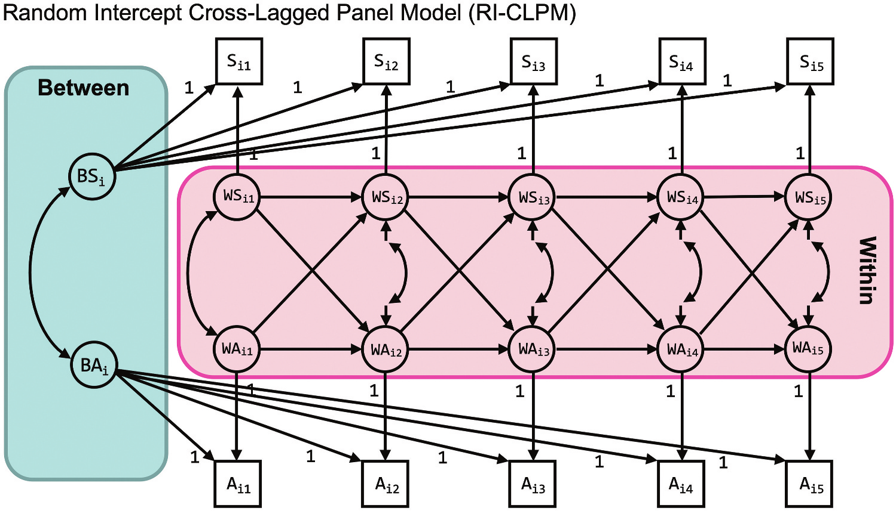De Mulder & Hamaker (2021), p.2. Nota. Representación gráfica del RICLPM básico. \(S_{it}\) denota la variable observada problemas de sueño y \(A_{it}\) la variable observada ansiedad para el individuo \(i\) en el tiempo \(t\).
Variables time-invariant
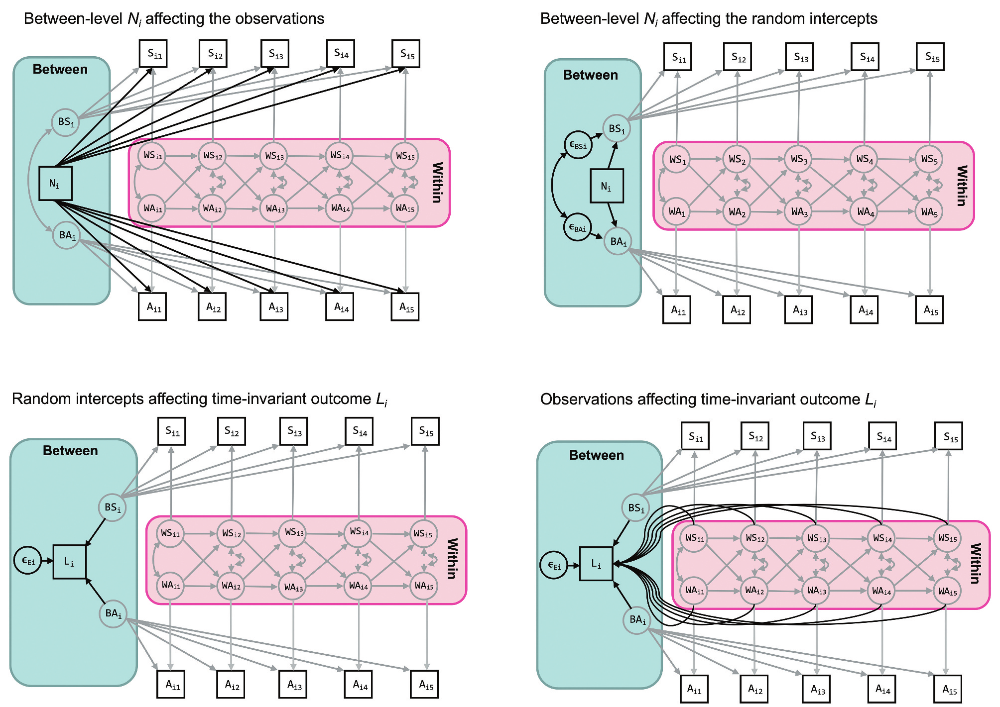De Mulder & Hamaker (2021), p.2. Nota. Inclusión de variables invariantes en el tiempo. El panel superior izquierdo, \(N_i\) tiene un impacto directo sobre las variables observadas en cada ola. El panel superior derecho, \(N_i\) tiene un impacto indirecto sobre las variables observadas a través de los interceptos aleatorios. El panel inferior izquierdo, \(L_i\) es explicada por los interceptos aleatorios, incluyendo sólo varianza between. En el panel inferior derecho, \(L_i\) es explicada tanto por los interceptos aleatorios como por los componentes within, siendo predicha tanto por la varianza between como por la varianza within.
Variables latentes
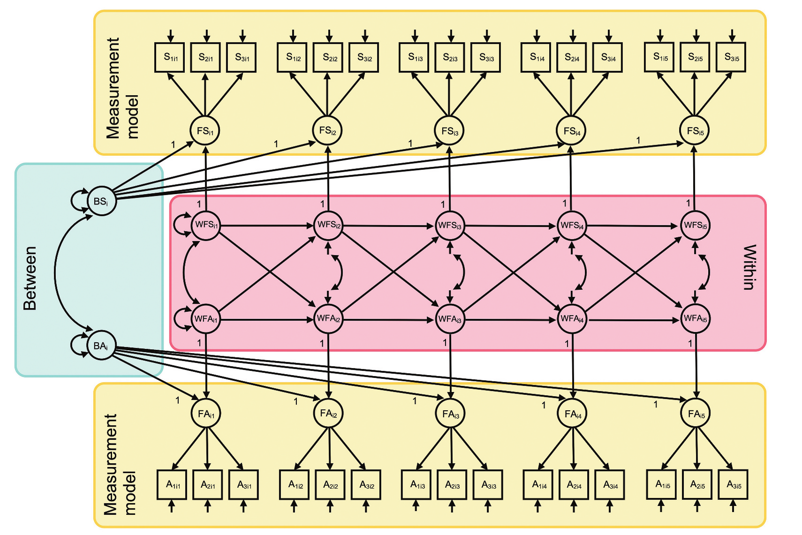De Mulder & Hamaker (2021), p.7. Nota. Incorporación de indicadores múltiples. Hay una variable latente por ocasión, que contiene una parte invariante en el tiempo capturada por interceptos aleatorios de orden superior y una parte variante que es usada para capturar las dinamicas en el tiempo.
Más extensiones y desarrollos
- Mediación: Incluir mediadores que varían en el tiempo (Keele, 2015; Mulder & Hamaker, 2021).
- Moderación: Incluir moderadores estables en el tiempo o que varían en el tiempo (Mulder & Hamaker, 2021; Ozkok et al., 2022; Speyer et al., 2023).
- Variables de resultado no-continuas: Resultados binarios o categóricos (Asparouhov & Muthén, 2021).
- Poder estadístico: Paquete
powRICLPM(Mulder, 2023) para realizar análisis de poder en R.